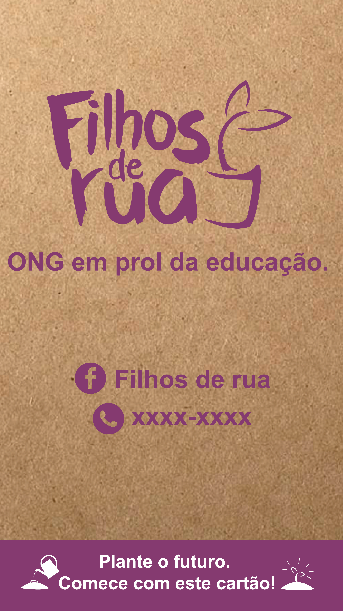
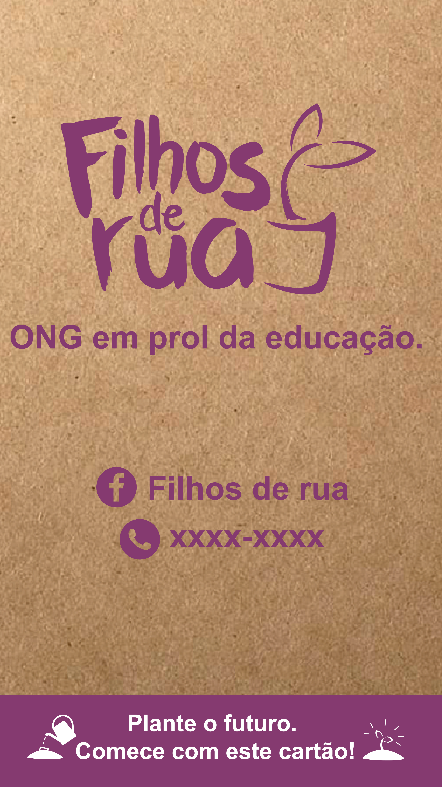

Identidade Visual: Filhos de Rua
Este projeto foi realizado em conjunto por mim e minha colega Fernanda de Souza Moreira. O objetivo do projeto "Filhos de Rua" é, por meio da venda e doação voluntária de produtos sustentáveis, ajudar crianças que vivem nas ruas e não têm condições de frequentar a escola. A ONG responsável pelo projeto tem como missão promover a educação e a sustentabilidade, e descreve a iniciativa como alegre, sustentável e futurista. Nosso maior objetivo neste projeto é quebrar os preconceitos em relação a essas crianças e mostrar que elas são como todas as outras. Durante o brainstorming, escolhemos três palavras-chave: futuro, criança e oportunidade. A ONG solicitou a criação de uma identidade visual, ecobags, material para Facebook e cartazes. Foi exigido que não utilizássemos desenhos de quadro de giz e que evitássemos o uso isolado da cor laranja.
Moodboard

Naming
O nome "Cyber Space" foi escolhido para transmitir aos clientes a ideia de que a cafeteria é moderna e descolada, com referências ao gênero literário "cyberpunk", que é muito popular entre os Geeks, e ao espaço, que é um tema recorrente nas histórias de ficção científica.
Ao combinar esses dois conceitos, a cafeteria busca atrair um público antenado e que busca experiências únicas e inovadoras. Venha conhecer o Cyber Space e embarque em uma jornada por um universo de sabores e tecnologia!
Análise de concorrentes
Criança Esperança:
Identidade Visual Forte, com logo e design bem
trabalhado;
Divulgação em diversas plataformas, como principal a TV e Internet;
Financiado pela empresa Rede Globo;
Arrecadação de doações em dinheiro a partir de ligações, vendas online e programas especiais passados ao vivo na TV;
Vantagem: como funciona a partir de investimento privado, é muito bem estruturada e divulgada. Site simples e bem estruturado. Eles postam poucas vezes, frequência mais ou menos de 2-3 semanas, tem anúncios.
Campanha do Agasalho:
Divulgação na TV;
Divulgado pelo site Governo do Estado de São Paulo, eles também utilizam Facebook, Instagram, Twitter, flickr, issuue e Linkedin;
Os sites tem aparências bem limpas e diretas;
Por ser divulgado na TV e ser uma campanha famosa, é uma grande concorrente;
Possui muito auxílio comunitário, principalmente na
área de divulgação, dos quais diversas emissoras/empresas/artistas promovem de forma solidária a mesma.
Personas
Meu nome é Valter Blanco. Sou um investidor e dono de uma grande empresa que pertence à minha família há séculos, e sempre me dediquei a ela. Ultimamente tenho me deparado com uma grande falta de profissionalismo entre meus funcionários e mão de obra especializada no Brasil. Por isso, tenho muito interesse em investir em projetos educacionais que possam ajudar as crianças que serão o futuro do país.
Me chamo Olinda. Há muitos anos trabalho coletando lixo nas ruas e vendendo para uma usina de reciclagem. Eu era casada, mas me separei há alguns anos e agora crio meu único filho, Lucas, sozinha. Infelizmente, o trabalho fez com que Lucas tivesse que abandonar a escola para me ajudar no dia a dia, o que me parte o coração. Espero que um dia eu consiga arranjar um emprego diferente e que Lucas tenha uma nova oportunidade de estudar.
Sou Vanda Maximus, uma professora aposentada há muitos anos. Dediquei o resto da minha vida à ecologia e à solidariedade, sempre participando de projetos e doando o que posso. Minha maior inspiração é meu marido, Rodolfo, que ainda é considerado analfabeto, mas nunca desistiu de aprender.
 
